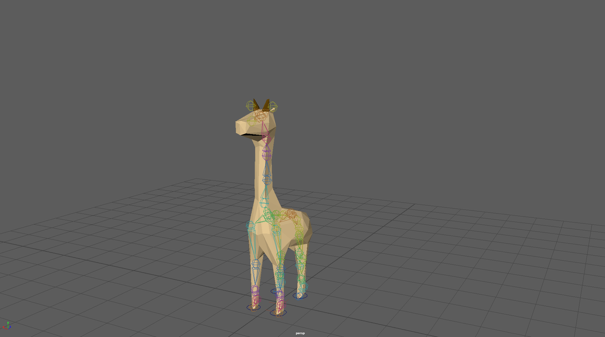

'Wacky Safari' is a seated VR experience built for the HTC Vive. For this Round of BVW, we were prompted to design and build a virtual world, the traversal of which required no instructions whatsover even for the most naive of guests. The world was also required to deliver a strong feeling of freedom to the guest.
The experience was selected as 1 of 16 to be showcased at the 2018 ETC Festival at Carnegie Mellon.
What is BVW: BVW (or Building Virtual Worlds), is the premier course for first years at CMU's Entertainment Technology Center. It is composed of 5 rounds spread throughout 1 semester. For each round, you're put in a random team of 5 (composed of 2 programmers, 2 artists, 1 sound designer) and the team is tasked with creating a complete AR/VR experience in the span of two weeks. After the 2 weeks, teams are shuffled.
Above: A walkthrough of the entire experience. The experience has the guest seated in a futuristic vehicle that transports him through a safari park. The only thing handed to the guest is a camera and he can take pictures of the many wacky animals he sees on his trip. The animals react to their pictures being taken in funny and unsual ways.
Art: As one of the two artists on the team, I rigged and animated the giraffe, whale and bird. I also modelled the bird and set up the initial 'Entrance' scene in Unity. Importing all my animations into the relevant Unity scenes for my team's programmers was another task I performed as the artist.
As a Maya beginner, I took this opportunity to study about IK Systems and Controllers. Because of the strict deadline and need to start playtesting as soon as possible, the giraffes and whale were to be completely ready in 4 days. Hence, I decided to give them very basic but precise and functional skeletons.
For the giraffes, IK legs, an FK neck and controllers for all feet were implemented. For the whale, an FK spine and relevant controllers on the spine and tail. These decisions were based on the fact that the giraffe only required a quadruped walk cycle and a "wacky" dance animation. The whale reqiured a looped swim and a transition from the swim to an acrobatic jump above the water suface.

Above: A funny dance animation for the giraffe. Initially, while animating, I would have one animation for each Maya scene. I'd duplicate my scene for every new animation. I soon realized through a bit of research on the internet that I could exporta single FBX file with as many animations from Maya and access all of them seperately in Unity through frame numbers.
Game Design: We decided on a seated experience very early on in the team discussions and the dire need to make use of virtual interactions that translated almost exactly to the physical world; our goal was always to cater to guests with absolutely 0 familiarty with AR/VR. For this very reason, we were firm on wanting to eliminate (direct) use of the Vive controller.
Once we had set ground rules and decided on elements we wanted our world to have, we talked about theming and settled on the safari park idea. It allowed us to limit interactions to taking pictures using a camera prop. We made sure the size and layout of the prop translated exactly from the physical world to the virtual. We also, quite fairly, assumed that almost all guests will be familiar with how a normal camera is operated. This was strongly reimposed during our playtests.
Above: The camera prop and the model it translates to in-game.
The Camera Prop: It was made using a wireless mouse fixed inside a cardboard outer shell. An HTC Vive tracker was strapped to the cardboard box. The left mouse button took pictures, the right button went to the gallery, the scroll zoomed in and out while in picture mode and traversed through images while in gallery mode.
Throughout playtests, guests felt confident using the camera and this reinforced in them a strong feeling of freedom as they took pictures at will of whatever they wanted. For our final presentation, we were to take a naive guest through our experience. After, the guest very enthusiastically rated our world a 10/10 for freedom.
Notable Experiences:
Practiced the art of indirect control in games.
Designed and playtested a successful interest curve as part of the experience.
Became considerably knowledgable about IK systems and their applications in Maya. Continued self study regarding the topic after the project.
Designed and built functional, precise and efficient rigs in Maya.
Imported all assets created in Maya to Unity.
Developed basic workflow for exporting single FBX files with all animations, accompanied with a text file clearly describing the breakdown of the frames.